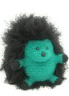

|
||
Premium Patterns Wintry Mix Mitts Love Bytes HawkeyeFree Patterns Kiddie Cadet Summerlin Ruffled Scarf Seamless DS Sock Simply Seamless Pouch Myriads of MushroomsExtras DIY Mitten Blocker Felt Patch Tutorial Yarn Dyeing Tutorial Needle Pouches Knitting Journal |
December 18, 2007 - Posted by Alice SchneblyA Baker's DozenThough the physical resemblance to Zeke is evident, Zach couldn't be more different than his older brother. Zach is very sensitive and caring. He says his most favorite thing to do is "pet puppies while listening to the Soundscapes® channel on TV." He's very much a homebody and can often be found on the couch with a box of tissues while watching Lifetime. Project Specs After a long hiatus, I finally finished up hedgehog number three! He is on his way to Washington state to meet up with Zeke and Molly* where he will hopefully make a little boy very happy on Christmas. I was really dreading working on the back of this fellow and literally put it off until the last minute. Once I actually sat down to do it the knitting went by so fast! I think now that I’ve made this pattern so many times I can really speed through it. So, some of you may be wondering actually how many times I have knit this pattern… well, let’s just say I’ve made a baker’s dozen hedgehogs! Some I never got to take pictures of, and one was stolen. Overall I’ve knit six as gifts and three while teaching classes at my LYS. Camdyn has two hedgehogs all her own and the first hedgehog I made (he’s quite “special”) is somewhere in my boxes of crafty stuff. I’ve used about a million different yarns for these guys too. Cascade 220 Wool, Patons Classic Merino, Ella Rae Classic Wool, and Berroco Ultra Alpaca all work great for making hedgies. For the novelty yarn portion of the hegehogs I’ve used a ton of different yarns, that all give varied results. Lion Brand Fun Fur works great and makes a shorter spikier coat. My new favorite has to be Jo-Ann Cello (that I used for Zeke and Zach) which makes longer hedgehog hair that’s really fun to style! An extra touch that I think makes the hedgehogs even more special is carrying along a longer strand of eyelash yarn with the main hair yarn. It gives the effect of longer spines that are pretty cool! I’ve used Ironstone Eyelash and Berroco Plume and both look great. The only yarn I’ve used on a hedgie that I would not recommend is Bernat Disco. I got a free ball of it a long time ago during an online promotion and used it on my first hedgehog. The shiny strands matted up with the fur strands and it didn’t work out so well. I am glad to see that this pattern has become more popular since when I made my first hedgehog. I remember searching all over the internet for a finished version of this pattern and I couldn’t find a single one! I am glad I gave it a try because I really love it. I also can’t believe that there are 239 Fiber Trends Hedgehogs on Ravelry! There are all different kinds of hedgies—from a punk rock hedgehog (who has a nose ring) to a Grateful Dedgehog… there’s even a Skunk too! There are so many fun possibilities with this pattern. I’m not sure when I’ll knit another hedgehog, I just know that I’ll knit one again someday! *Thank you to JulieFrick for naming Molly! |
   Recent ReviewsRecent Posts
 Our Favorites
|
| © 2007 KathrynIvy.com | ||
{kind=link}